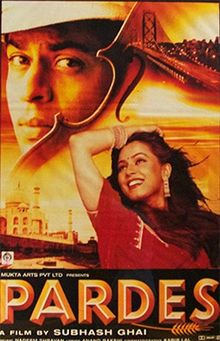

SRK MANIA
Home
Songs
Movies

Pardes (1997)
Label: Tips
Ye Dil Deewana
Do Dil Mil Rahe Hain
Meri Mehbooba
I Love India
Jahan Piya Wahan
Title Track
My First Day in U.S.A
I Love India-Part II
Nahi Hona Tha
Songs may take some time to load.
To download right click on the play/pause button and click 'save audio as' option.